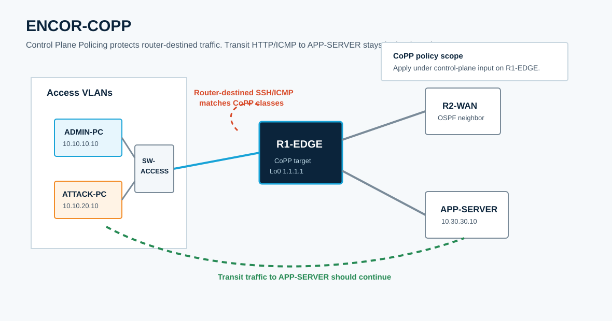

Overview
This lab targets ENCOR 5.2.b: configure and verify Control Plane Policing. You will build a CoPP policy that protects R1-EDGE from excessive traffic destined to the router itself while preserving data-plane forwarding and routing stability.
CCNP-level value is in understanding what is punted to the route processor, what stays in the data plane, how ACLs classify traffic for MQC, and how policers behave under test. You will separate SSH, ICMP, OSPF, and remaining control-plane traffic into explicit classes, then verify each class with counters and operational tests.
Topology
ADMIN-PC and ATTACK-PC sit on separate VLANs behind SW-ACCESS. R1-EDGE forms an OSPF adjacency with R2-WAN and forwards traffic to APP-SERVER. The starting CML topology has IP connectivity, SSH, and OSPF already working. CoPP is intentionally absent.

Task 1: Baseline Control Plane and Data Plane Behavior
Verify what reaches the router control plane and what is only forwarded through the router. CoPP affects packets destined to, sourced by, or processed by the router CPU; it should not block ordinary transit traffic unless that traffic must be punted.
! R1-EDGE
show ip interface brief
show ip ospf neighbor
show ip route ospf
show control-plane
show policy-map control-plane
show running-config | section control-plane
show usersFrom ADMIN-PC and ATTACK-PC, test traffic to R1-EDGE and through R1-EDGE. If SSH is not enabled, verify that the startup config used ip domain name encor.local before generating RSA keys.
ping -c 5 10.10.10.1
ping -c 5 10.10.20.1
ping -c 5 10.30.30.10
wget -O- http://10.30.30.10
ssh -o StrictHostKeyChecking=no -o UserKnownHostsFile=/dev/null admin@10.10.10.1From R1-EDGE, confirm the routing protocol is healthy before policing it:
show ip ospf neighbor detail
show ip protocols
show ip cef 10.30.30.10
ping 10.30.30.10 source Loopback0Task 2: Classify Control Plane Traffic
Use ACLs only as match criteria for MQC classes. In this role, an ACL permit means "classify this packet into the class"; it is not the forwarding decision. Excluded or denied lines simply do not match that class.
! R1-EDGE
conf t
ip access-list extended COPP-MGMT-SSH
remark Trusted SSH sessions to R1-EDGE interface addresses
permit tcp host 10.10.10.10 any eq 22
permit tcp host 10.10.20.10 any eq 22
!
ip access-list extended COPP-ICMP
remark ICMP destined to R1-EDGE interface and loopback addresses
permit icmp any host 10.10.10.1
permit icmp any host 10.10.20.1
permit icmp any host 10.12.12.1
permit icmp any host 1.1.1.1
!
ip access-list extended COPP-OSPF
remark OSPF hellos and updates must stay available
permit ospf any any
!
class-map match-any CM-COPP-ROUTING
match access-group name COPP-OSPF
class-map match-any CM-COPP-MGMT
match access-group name COPP-MGMT-SSH
class-map match-any CM-COPP-ICMP
match access-group name COPP-ICMP
end
!
show class-map
show access-lists COPP-MGMT-SSH
show access-lists COPP-ICMP
show access-lists COPP-OSPFDepth check: CoPP classification ACLs should usually match traffic destined to the device, not traffic merely crossing the device. A transit HTTP flow to APP-SERVER should not match an ICMP or SSH CoPP class.
Task 3: Build and Apply the CoPP Policy
Create a conservative input policy. The exact rates in a production network come from platform guidance and measured traffic baselines; in this lab, the rates are intentionally low enough that you can see counters move without breaking OSPF.
! R1-EDGE
conf t
policy-map PM-COPP-INPUT
class CM-COPP-ROUTING
police 256000 conform-action transmit exceed-action transmit
class CM-COPP-MGMT
police 128000 conform-action transmit exceed-action drop
class CM-COPP-ICMP
police 32000 conform-action transmit exceed-action drop
class class-default
police 64000 conform-action transmit exceed-action drop
!
control-plane
service-policy input PM-COPP-INPUT
end
!
show running-config | section policy-map PM-COPP-INPUT
show running-config | section control-plane
show policy-map control-planeTest again from ADMIN-PC and ATTACK-PC. SSH from ADMIN-PC should work. ICMP to R1-EDGE should work under normal load. Transit HTTP to APP-SERVER should continue to work.
Task 4: Verify Counters and Policing Behavior
Use short, controlled tests. You are trying to prove classification and policing, not overwhelm the lab.
! R1-EDGE
clear counters
show policy-map control-plane
show access-lists COPP-MGMT-SSH
show access-lists COPP-ICMP
show access-lists COPP-OSPFGenerate control-plane traffic:
! ATTACK-PC
ping -c 30 -s 1200 10.10.20.1
ping -c 30 1.1.1.1
ssh admin@10.10.20.1
! ADMIN-PC
ssh admin@10.10.10.1
ping -c 10 10.10.10.1Then verify on R1-EDGE:
show policy-map control-plane
show access-lists
show processes cpu sorted | exclude 0.00
show logging | include POLICE|CoPP|CP|SSH|OSPFExpected result: class counters increment for matched traffic. Drops may stay at zero in CML under short tests if the offered rate stays below the policer. OSPF neighbors should remain full.
Task 5: Protect Routing and Management Without Breaking Operations
CoPP policies often fail because a useful protocol is missing from the policy, or because class-default is too strict. Confirm the routing class handles OSPF and the management class handles SSH while untrusted sources fall into a lower-priority class.
! R1-EDGE
show ip ospf neighbor
show policy-map control-plane
show access-lists COPP-MGMT-SSH
show access-lists COPP-ICMP
show access-lists COPP-OSPF
show tcp brief | include :22Some IOS XE images treat show policy-map control-plane class NAME as ambiguous. Use the full control-plane policy output and scroll to the class you need.
Optional refinement: split trusted and untrusted SSH so scans are limited more aggressively than known admin hosts.
conf t
ip access-list extended COPP-UNTRUSTED-SSH
deny tcp host 10.10.10.10 any eq 22
deny tcp host 10.10.20.10 any eq 22
permit tcp any any eq 22
!
class-map match-any CM-COPP-UNTRUSTED-SSH
match access-group name COPP-UNTRUSTED-SSH
!
policy-map PM-COPP-INPUT
class CM-COPP-UNTRUSTED-SSH
police 16000 conform-action transmit exceed-action drop
end
!
show policy-map control-planeACL deny statements in the untrusted SSH classifier exclude trusted sources from that class; they do not deny the traffic by themselves. This distinction matters when troubleshooting CoPP.
Task 6: Tune and Troubleshoot CoPP
Use symptoms to isolate classification, attachment, rate, and protocol gaps.
- No counters increment: traffic is transit traffic, the ACL does not match router-destined addresses, or the service policy is not attached under
control-plane. - SSH fails from trusted hosts: the management class ACL misses the source, destination, or TCP port direction.
- OSPF flaps: routing traffic is missing or class-default is too restrictive.
- ICMP tests behave differently than HTTP tests: ICMP to the router is control-plane traffic; HTTP through the router is data-plane traffic.
- Policy-map counters show drops but ACL counters do not: the packet may match another class first, or the ACL is not the match condition for that class.
show policy-map control-plane
show running-config | section class-map
show running-config | section policy-map
show running-config | section control-plane
show ip ospf neighbor detail
show access-lists
show processes cpu historyOperational note: Platform support and exact punt visibility commands vary. In this CML IOL-XE image, show platform software fed active punt cause summary is not available. Use show policy-map control-plane, protocol state, ACL counters, and controlled traffic tests as the authoritative evidence for this lab.
Endpoint note: If APP-SERVER refuses HTTP, log in as root and verify the listener with netstat -ltn | grep ':80'. The packaged CML file starts /usr/sbin/httpd -f -p 80 -h /www so a fresh import should already have TCP/80 listening.
Startup note: This image supports VTY 0-4 only and uses ip domain name with a space. line vty 5 15 and ip domain-name will produce startup parser errors.
Grade Entire Lab
control-plane as an input service policy.